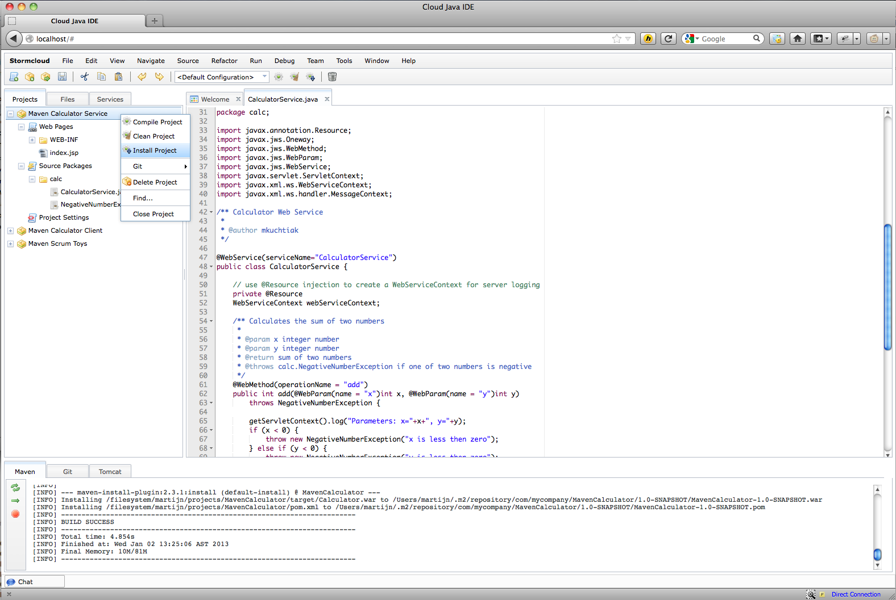
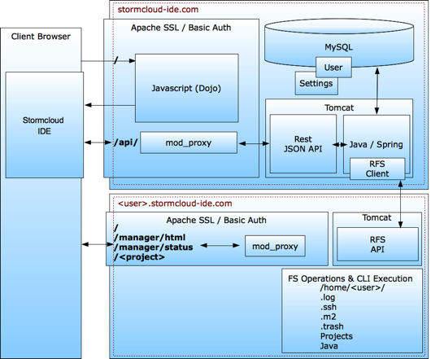

Coding in the Cloud
View Stormcloud IDE on GitHub stormcloud-ide
Code available on GitHub
Welcome to Stormcloud IDE
How many times did you have to (re)install your development environment?, just because you changed PC, Jobs or the lot. There you go, install a JDK, Maven, Git, an IDE, MySQL and all those other things like the fiddling with your environment to get going ...
Of course all those fresh installs do not have your prefered configurations and you will have to go over the bunch of settings they carry. Again. More extra todo's before you actually start writing some code.
You might also be in the habit of working on different machines. But yes, working on the same projects.
Also you could have discussions with co-coders about, hey it works for him but does not work for me. Or what about online pair-programming?
Have the time for a few cups-a-jaba too many before the whole circus is up and running in the morning?
I get it, i get it, so what's the magic?
The magic is found in a feature rich Java Development Environment served to you straight from the Browser.
Imagine a fully functional development environment (yes including the supporting acts like databases, web services and what have you not) which will when you open it in the browser on your laptop be in the exact same state as when you closed it on your company PC.
Imagine deploying your build to Tomcat or any Application Server trough a right click in the Project explorer in your browser and run/test the applicartion directly in another tab or browser window?
Imagine you can debug the application, in the browser. Yes, a server-side app running on a VM being debugged in your browser.
That and all other useful IDE functionality you can find on your desktop IDE as well these days.
Sounds great, how does it work?
The Stormcloud IDE is divided into two main projects, 'The Backbone', being GUI and API (They are lined up on the left side, clicking on them takes you to their GitHub pages) and three supporting projects, Model, Installer and the Project Super Pom & Site.
So there is the GUI project which obviously is the thing you deal with in your face. The aim of this GUI is to look and offer what a normal desktop IDE looks like and offers to the Java Developer.
Here is a small peek at the actual thing
This GUI is pointed at the Rest API on a server which in turn knows all about your home directory trough the RFS where all your personal development parts are living.
It would look very much like this when a C-something-O asked to have a mugshot of the thing.
That's all nice, and what's next?
Next is joining the Stormcloud IDE Team and together build this piece of software. Quite some work has been done but there is a lot more to do so we are looking for
- Java Developers & Architects
- Beta Testers
- Writers for Manuals, Tutorials and Documentation
- Translators
- Enthousiasts, Preachers, Fans and Users
A list of the software stack we use can be found here
Join, Fork, Star
So visit the project pages, Fork the Repository you want to work on, check the issues and create your pull-requests when you want to contribute code.